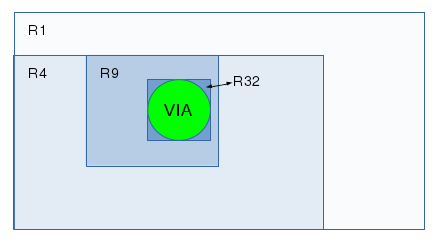

PCB Development Introduction
I started this document to get an insight in the structure/architecture of the PCB program. The main objective is to get up to speed so we are able to start contributing to the PCB program.
This document is work in progress.
Get Information
These links help to get an understanding of PCB:
| Link | Remark |
|---|---|
| http://pcb.geda-project.org/manual.html | As always read the manual first. |
| http://pcb.geda-project.org/faq.html | |
| http://www.delorie.com/pcb/docs/gs/gs.html#Terminology | Knowing the terminology helps in understanding the code |
| http://wiki.geda-project.org/geda:pcb-quick_reference | |
| http://wiki.geda-project.org/geda:pcb_footprints | |
| http://wiki.geda-project.org/geda:pcb_tips | |
| http://wiki.geda-project.org/geda:documentation |
root Directory structure
This is the ~/pcb directory
| data | PCB layout and gerber icons and mime registration data | |
| doc | All files used to generate the documentation | |
| example | Speaks for it self, examples how to use PCB | |
| gts | This directory/library is only used by the toporouter (toporouter.h includes gts.h) | |
| * | intl | Internationalization - it handles conversions to non-English languages. It is for i18n, l10n and related stuff. See the ABOUT-NLS text file in the root directory for more information. |
| lib | The M4 library stores the footprints as M4 macros | |
| m4 | Some additional m4 scripts used by configure | |
| newlib | File to make newlib library components | |
| po | Translation files | |
| README_FILES | Information in this directory is obsolete and/or very old. Just ignore it. | |
| src | The source code | |
| tests | File to test the build during make | |
| tools | Build tools | |
| tutorial | ||
| utils | Build tools | |
| w32 | File needed to build for Windows | |
| * | This directory is no part of the git repository it is added by the ./autogen.sh script |
|
src Directory structure
This is the ~/pcb/src directory
| src/hid | Human Interface Device layer. The basic idea is that every action outside the core is treated as a separate human interface device. | |
| src/hid/batch | Batch mode | |
| src/hid/bom | Export a bill of materials | |
| src/hid/common | ||
| src/hid/gcode | Export to G-Code | |
| src/hid/gerber | Export RS-274X (Gerber) | |
| src/hid/gtk | Graphical User Interface based on GTK2 | |
| src/hid/lesstif | Graphical User Interface based on lessif | |
| src/hid/lpr | Printer driver | |
| src/hid/nelma | Numerical analysis package export | |
| src/hid/png | export GIF/JPEG/PNG | |
| src/hid/ps | export postscript /encapsulated postscript | |
| src/hid/hidint.h | HID internal interfaces. These may ONLY be called from the HID modules, not from the common PCB code. | |
| src/icons | ||
src Directory file list
These are the files in the ~/pcb/src directory
| _*_ | File | Short description | Comment / Explanation |
|---|---|---|---|
| H | action.* | action routines for output window | This is one of the top files. A lot of the functionality will start here. This is a good place to start your digging work when learning the PCB code. This file also contains a lot of documentation generating code. This means two things: - Look at the PCB manual for a description of all actions (manual is in doc directory after make) - Take this as an example how to add documentation to the code. |
| H | autoplace.* | functions used to autoplace elements. | |
| H | autoroute.* | functions used to autoroute nets. | |
| C | box.h | random box-related utilities. | |
| C | buffer.* | functions used by paste- and move/copy buffer | |
| D | change.* | functions used to change object properties | |
| check_icon.data | |||
| clip.* | Clip the line to the clipBox | ||
| C | command.* | executes commands from user | That is, some commands, only the short-hand vi compatible commands like l, le, m, q, w, s and rn. See pcb manual for the explanation. See action.c for the other commands. |
| C | compat.* | This file is for compatibility across operating systems; we can define functions there that might be missing elsewhere (like linux-specific things) or broken elsewhere. Mostly it's for unix-vs-windows. | |
| const.h | global source constants | ||
| D | copy.* | functions used to copy pins, elements … | |
| D | create.* | functions used to create vias, pins … | |
| H | crosshair.* | crosshair stuff | is for the board's crosshair; this handles (for example) grid snapping. This is *not* the same as the GUI's mouse cursor. For the GKT GUI the crosshair will follow the mouse if its over the board-space/canvas. |
| C | data.* | just defines common identifiers | |
| C | dbus.* | Interprocess communication (IPC) | D-Bus is a system for interprocess communication (IPC). D-Bus code originally derived from example-service.c in the dbus-glib bindings. The dbus was added to provide some communications between gschem and pcb, and to provide some remote-control options for pcb. Not sure if anything uses it at the moment. If you're not interested in connecting to other programs just ignore the files. |
| C | dbus-pcbmain.* | PCB HID main loop integration. | |
| C | default_font | From the PCB documentation: A number of user defined Symbols are called a font. There is only one per layout. All symbols are made of lines. See the file 'default_font' as an example. Fontmode.c is linked with this file. |
|
| D | djopt.* | optimize functions | is for the “Connects→Optimize Routed Tracks” functions. |
| C | dolists.h | REGISTER_*(a) macro in dolists.h will be expanded by the preprocessor to the actual calling of these functions. | |
| H | draw.* | drawing routines | |
| H | drill.* | functions to generate drill information | is for generating drill report information. |
| H | edif.* | EDIF stands for Electronic Design Interchange Format. | These files are associated with only one action “LoadFrom(Netlist)”. This will call the function ImportNetlist() in file.c. If the first line of the netlist file contains “edif” it will use these files to parse the EDIF 2.0.0 formatted file. A little googling learns that the EDIF 2.0.0 file format was approved in March 1988. File format EDIF 4.0.0 was released in August 1996. The PCB documentation doesn't say anything about EDIF. The files are here to be backwards compatible, so we are able to read files generated many year ago. It doesn't hurt so just ignore it. |
| edif_parse.h | This file defines the interface to the outside world. | ||
| edif.y | file says: A Bison parser, used in with edif.c. EDIF stands for Electronic Design Interchange Format. | ||
| C | error.* | error and debug functions | |
| C | file.* | file save, load, merge … routines | |
| D | find.* | routines to find connections between pins, vias, lines… | |
| C | flags.* | routines to initialize and use flags | flags.c functions are used by some of the HIDs to mark menu entries as “checked” vs “unchecked” when they refer to flags. That's why they're registered, too, there's a list with ASCII names that hids can refer to. |
| H | fontmode.c | routines to edit the font in PCB | There are two actions: FontEdit() and FontSave() Font editing draws one of each character on the screen as a PCB. You edit the PCB. Then it reads the traces from the PCB and turns it back into a font. You can then cut/paste the font section out of that pcb to default_font. default_font is linked with this file. |
| C | free_atexit.* | some routines to free memory | |
| gather-actions | shell script used during build. | Probably a leftover from an old build script, I can't find where it is called. Think the script isn't used. Just ignore it. |
|
| gettext.h | Used if –enable-nls option is configured. Takes care of internationalization. | ||
| C | global.h | The big include just about everything include file | |
| H | gpcb-menu.res | ||
| C | heap.* | The heap functions seem to be associated mainly with the two autorouters. Additionally the file polygon1.c makes use of a heap in one of its functions | |
| H | hid_draw.h | Low level drawing API. | |
| H | hid.h | Human Interface Device layer. | This is one of the top files. This is a good place to start looking if you want to know what's-what. |
| icon.data | |||
| D | insert.* | functions used to insert points into objects | |
| D | intersect.* | rectangle intersection/union routines. | |
| D | line.* | line routines | |
| lrealpath.* | Libiberty realpath. Like realpath, but more consistent behaviour | ||
| C | macro.h | some commonly used macros not related to a special C-file the file is included by global.h after const.h | |
| C | main.c | It all starts here | |
| main-test.c | |||
| D | mirror.* | functions used to change the mirror flag of an object | |
| C | misc.* | ||
| mode_icon.data | Icons used in the GUI | ||
| D | move.* | functions used to move pins, elements … | |
| C | mtspace.* | implementation for “empty space” routines (needed for via-space tracking in the auto-router. | |
| C | mymem.* | memory management functions | |
| H | netlist.c | ||
| C | parse_l.* | lexical definitions to parse ASCII input of PCB and Element description | Parse an element file or layout file. This is either a footprint file or our PCB layout file |
| parse_y.* | grammar to parse ASCII input of PCB description | ||
| H | pcb-menu.res | ||
| C | pcb-printf.* | Implementation of printf wrapper to output pcb coords and angles. | |
| pcbtest.sh.in | Used during the build to test the program | ||
| D | polyarea.h | file says: poly_Boolean: a polygon clip library. | Used in polygon.c, polygon1.c and thermal.c |
| polygon1.c | polygon clipping functions | ||
| polygon.* | special polygon editing routines | ||
| H | print.* | printing routines | Looks like it is used to “print” the fabrication layer. print.c generates a layer to be used as a fabrication drawing. Whether the HID uses that or not (and what it does with it) is a Separate question. At least, both ps and gerber need that layer. Since the layer is created in “pcb unit space” it's in the core. HID things tend to happen in “hid unit space” instead. |
| H | puller.c | PCB HID Project - Puller | See http://www.delorie.com/pcb/puller for more information. |
| H | rats.* | rats nest routines | |
| D | remove.* | functions used to remove vias, pins … | |
| H | report.* | Tell the user what he/she must know | See PCB manual for the options. |
| H | res_lex.* | These files are used to parse the pcb-menu.res and gpcb-menu.res files. This defines the menu structure of PCB. res_* is a generic resource parser. Both gtk and lesstif hids use them. | |
| res_parse.* | A parser, to read the resource (menu items etc) form PCB | ||
| H | resource.h | ||
| D | rotate.* | functions used to rotate pins, elements … | |
| C | rtree.* | r-tree functions | a way to quickly find 2-D objects in a 2-D space |
| rubberband.* | functions used by 'rubberband moves' | ||
| C | search.* | search routines some of the functions use dummy parameters | |
| C | select.* | select routines | |
| C | set.* | routines to update widgets and global settings (except output window and dialogs) | |
| C | strflags.* | Some flags routines | |
| C | thermal.* | negative thermal finger polygons | |
| toporouter.* | This file implements a topological autorouter. | Please take a look inside the file for some literature references on the toporouter. | |
| C | undo.* | functions used to undo operations | |
| C | vector.* | operations on vectors. | |
| H | vendor.* | routines to generate vendor specific output | vendor.c is used to load vendor-specific DRC rules and apply them. |
D = These files have there focus on the Data Functionality. They manipulate the PCBType or DataType structure.
C = These files have there focus on the Core Functionality. They support the overall working of the program.
H = These files have there focus on the HID Functionality. They support the HID actions and requests.
Build system
You must have a working build system before you even can think about hacking the source code. Make sure you can build a git clone.
Try building the sources from git before you try anything else.
The wiki page http://wiki.geda-project.org/geda:developer shows the git command to get the geda-gaf repository. We are talking about pcb here.
For pcb we need to do:
git clone git://git.geda-project.org/pcb.git
For the other repositories take a look at http://git.geda-project.org/
Next get your build system working. http://wiki.geda-project.org/geda:gaf_building_git_version
While working on the pcb sources remember that PCB uses The AutoTools as there build system.
This isn't as daunting as it sounds, for the newbie developer.
The PCB development team has made it easy for us.
Generally just run:
./autogen.sh
and the scary part is over 
Then do the usual:
./configure make
The autogen.sh script is usually only needed once, after a git clone or if a file is added to be build into PCB. See Example on when to use the autogen.sh script.
For more information on the AutoTools take a look at: https://www.gnu.org/software/automake/manual/html_node/Autotools-Introduction.html
If you want to know more about git take a look at: https://git-scm.com/docs/gittutorial
Dependencies
PCB is a open source program and it uses open source libraries and tools to do what it does.
Doing a repoquery –requires pcb on my Fedora 20 system show the following dependencies:
| perl | libdl.so.2() | libm.so.6(GLIBC_2.2.5) |
| wish | libdl.so.2(GLIBC_2.2.5) | libpango-1.0.so.0() |
| libGL.so.1() | libfontconfig.so.1() | libpangocairo-1.0.so.0() |
| libGLU.so.1() | libfreetype.so.6() | libpangoft2-1.0.so.0() |
| libICE.so.6() | libgd.so.3() | libpangox-1.0.so.0() |
| libSM.so.6() | libgdk-x11-2.0.so.0() | libpng16.so.16() |
| libX11.so.6() | libgdk_pixbuf-2.0.so.0() | libpthread.so.0() |
| libXinerama.so.1() | libgdkglext-x11-1.0.so.0() | libpthread.so.0(GLIBC_2.2.5) |
| libXmu.so.6() | libgio-2.0.so.0() | libtiff.so.5() |
| libXpm.so.4() | libglib-2.0.so.0() | libvpx.so.1() |
| libXrender.so.1() | libgmodule-2.0.so.0() | libz.so.1() |
| libXt.so.6() | libgobject-2.0.so.0() | m4 |
| libatk-1.0.so.0() | libgtk-x11-2.0.so.0() | perl(File::Basename) |
| libc.so.6(GLIBC_2.14) | libgtkglext-x11-1.0.so.0() | perl(File::Copy) |
| libcairo.so.2() | libjpeg.so.62() | rtld(GNU_HASH) |
| libdbus-1.so.3() | libm.so.6() |
Trace an action
Here is a short introduction where to start if you want to trace an action down into the source code: Lets draw a line in the (GTK) GUI.
If we start pcb the default mode is the select mode, in order to draw a trace we need to switch to the LINE mode. We do that by pressing F2. Next we use the mouse to select a starting point and do a left click of the mouse button. Now we can start drawing a trace.
So what happens in the source code? PCB uses a flexible way of implementing menu structures and it uses a flexible way to implement actions the program should do. All this flexibility made it a bit difficult for me to see where to start.
F2 key
First let's trace the LINE mode selecting by pressing F2.
In the file gpcb-menu.res we look for our F2 key and we find
{"Line" checked=linemode,1 Mode(Line) a={"F2" "<Key>F2"}}
In the file action.c we find
HID_Action action_action_list[] {"Mode", 0, ActionMode, mode_help, mode_syntax}
The action_action_list defines that the Mode event is translated into the ActionMode function. So the function called when we press F2 is ActionMode(Line).
ActionMode is a generic function and therefore it will need to find what to do.
ActionMode (int argc, char **argv, Coord x, Coord y)
It will do that by calling GetFunctionID (AGV[0]) in this example AGV[0] = Line. The function ID will tell it to do the function SetMode (LINE_MODE);
That function will set the variable Settings.Mode to LINE_MODE
{kind=link}
Mouse click
Next we trace down what will happen if we left click the mouse button to start drawing a track.
Please note this is a very simplified call graph.
{kind=link}
In the file gpcb-menu.res Left mouse click Mouse = Left ⇒ points to Mode(Notify)
[*1] Mode(Notify)
Mode translates in the action_action_list into _ActionMode_
[*2] Left mouse click translates into calling function ActionMode(Notify)
[*3] The program will go back and forth between NotifyMode and NotifyLine until [*4].
In the function NotifyLine all the dynamic processing is done, meaning that here the limitations and restrictions are check realtime. e.g. if the Auto force DRC check flag is checked, this function checks if we try to draw over existing copper.
[*4]if two points are selected we can create a line
[*5] We need to free memory-space and add our new Line into the linked list. This is done through the GLIB Library. Next our newly created LINE object is filled with the relevant data. Basically we are done, the line is added to the data structure. However there is one more thing to do.
[*6] Our new line is stored into the main PCBType data structure (actually in the DataType sub structure). Now there is one more administrative task to do, the newly created line must be add to the rtree data structure. Every item that is added to the data structure is also added to the rtree data structure. The R-TREE data structure makes it easy to search for free or occupied areas on a layer.
This is in a very simplified description on what happens and the path the software takes to draw a line.
Crosshair
From: http://www.delorie.com/pcb/docs/gs/gs.html#Terminology
crosshair
This is the actual location on the board which is used when you perform an action. If grid snap is active, the crosshair reflects the grid point closest to the cursor, else the crosshair reflects the cursor itself.
So the crosshair is the X Y position on the PCB canvas. When grid is enabled the crosshair is automatically snapped to the grid.
Let's see how that works:
Open the file crosshair.c with your favourite text editor and look for the function FitCrosshairIntoGrid. In my version its around line 920.
Add the debug code into the function:
/* --------------------------------------------------------------------------- * recalculates the passed coordinates to fit the current grid setting */ void FitCrosshairIntoGrid (Coord X, Coord Y) { Coord nearest_grid_x, nearest_grid_y; void *ptr1, *ptr2, *ptr3; struct snap_data snap_data; int ans; /* Add the next two lines */ /* RZE: Debug code please remove if I forget */ pcb_printf("X=%d, Y=%d\n", Crosshair.X, Crosshair.Y); Crosshair.X = CLAMP (X, Crosshair.MinX, Crosshair.MaxX);'' Crosshair.Y = CLAMP (Y, Crosshair.MinY, Crosshair.MaxY);''
Try! From the command-line terminal do:
cd <to_pcb_source_directory> ./configure make src/pcb
In your terminal you will see the X and Y coordinates of the crosshair.
Please note that they are rounded numbers.
Turn off grid snapping and watch the numbers.
Congratulations, you just hacked into the PCB source code 
Example
As an exercise let's do something easy, like adding an action to PCB.
Before you start coding take a look at: Build system It is essential that you have a working build system.
When working on the source code of PCB then please make use of lots and lots of comments (preferably doxygen style). In trying to understand the code I was very grateful for every piece of comment the developer had written.
First make a file called example.c and add:
/*! * ===================================================================================== * * COPYRIGHT * Example action implementation for PCB. * Copyright (C) 2015 Robert Zeegers * * This program is free software; you can redistribute it and/or * modify it under the terms of the GNU General Public License * as published by the Free Software Foundation; either version 2 * of the License, or (at your option) any later version. * * This program is distributed in the hope that it will be useful, * but WITHOUT ANY WARRANTY; without even the implied warranty of * MERCHANTABILITY or FITNESS FOR A PARTICULAR PURPOSE. See the * GNU General Public License for more details. * * You should have received a copy of the GNU General Public License * along with this program; if not, write to the Free Software * Foundation, Inc., 51 Franklin Street, Fifth Floor, Boston, MA 02110-1301, USA. * * \File: example.c * \Brief: Example on how to implement a action in the PCB program. * \par Description * Example action implementation for PCB, interactive printed circuit board design * \copyright (C) 2015 Robert Zeegers * * \Version: 1.0 * Created: 24/07/15 * * \Todo: nothing * \Bug: not that I know of * * ===================================================================================== */ /* First thing todo is include global.h */ /* This will automatically also include const.h and macro.h */ #include "global.h" /* Second we include hid.h because we want to register our action to the HID */ #include "hid.h" /* We are going to add an action and therefore we want it to show-up in the PCB manual, */ /* so we add some documentation comments */ /* For the documentation style see the "extract-docs" perl script in the doc directory */ /* %start-doc actions DoSilly This function doesn't do anything useful. @example DoSilly() @end example %end-doc */ /* All action entry functions must have the same syntax as defined in */ /* typedef struct HID_Action (hid.h) */ static int ExampleDo (int argc, char **argv, int x, int y) { /* It should do something, so let's do something silly */ /* Let's write a Dutch songtext to the Message Log window */ /* The struct HID is defined in hid.h */ /* and the variable gui is made available there by "extern HID *gui;" */ /* First we check if we have a gui. */ if( 1 == gui->gui ) { /* if we have one let's write the songtext */ gui->log (_("Iedereen is van de wereld en de wereld is van iedereen!\n")); } } /* Now we have to make an action list. */ /* Here we make the connection between our command "DoSilly()" and */ /* the actual function which should be executed ExampleDo().*/ static HID_Action exampledo_action_list[] = { {"DoSilly", "Example action", ExampleDo, "Always provide some help", "DoSilly()"} }; /* Next a macro to register the action in the HID */ /* Note the missing ; at the end, that's correct ;-) */ REGISTER_ACTIONS (exampledo_action_list)
For an explanation on the REGISTER_ACTION macro see paragraph REGISTER.
Next we need to add our file to the build system.
We do that in the file MakeFile.am.
Open MakeFile.am and look for the variable PCB_SRCS and add the file example.c there like the others.
Clean your build directory by doing:
make distclean
Then do:
./autogen.sh
Now our file is in MakeFile.in
Next do:
./configure make
Run:
src/pcb
In the PCB program type ”:DoSilly()” and watch the message log window.
And do check out the pcb manual in doc/pcb.pdf search for “DoSilly”
REGISTER
REGISTER_ACTIONS - REGISTER_FLAGS - REGISTER_ATTRIBUTES
Every action file must register its actions in the HID. The action file will have an
#include "hid.h"
which define the REGISTER_* macros. Then somewhere in the file you add:
REGISTER_ACTIONS(exampledo_action_list)
This will be expanded by the preprocessor into:
void register_exampledo_action_list() { hid_register_actions(exampledo_action_list,1); }
During the build process the files core_lists.h and gtk_lists.h are created. These files contain nothing more than a collection of REGISTER_* instructions it found in its source files.
So core_lists.h and gtk_lists.h will contain:
REGISTER_ACTION(exampledo_action_list)
In the file main.c around the main functions we find the instruction:
#include "dolists.h"
And soon after that we find
#include "core_lists.h"
Because dolists.h redefines the REGISTER_* macros, the macros in core_lists.h
REGISTER_ACTIONS(exampledo_action_list)
will be expanded by the preprocessor into:
external void register_exampledo_action_list(); register_exampledo_action_list();
And therefore it will call all functions to register the actions at the beginning of the main function.
Options
| REGISTER_ACTIONS | These actions can be called though the user command window (start with ”:” in the PCB program. |
| REGISTER_FLAGS | These flags initiate a functions when set or unset. E.g. in file flags.c we find HID_Flag flags_flag_list[] = { {"style", FlagCurrentStyle, NULL}, {"grid", FlagGrid, NULL},
The “grid” flags is associated with the menu flag: View→enable visible grid and makes the connection to the |
| REGISTER_ATTRIBUTES | In main.c there is a call to this macro: REGISTER_ATTRIBUTES (main_attribute_list)The main_attribute_list defines the command-line options. Most of the HID also use this macro, to add their command line options as well. |
PCBType
PCBType is the main data structure
PCBType contain all the general information used in the program and it contains a pointer to the DataType

DataType
The DataType contains the actual data that defines our printed circuit board.
DataType is what's stored in the Buffers when you do cut/paste.
| Data Fields | ||
|---|---|---|
| Cardinal | ViaN | |
| Cardinal | ElementN | |
| Cardinal | RatN | |
| int | LayerN | |
| GList * | Via | Layer independent via's |
| GList * | Element | Layer independent elements |
| GList * | Rat | Layer independent rat-lines |
| rtree_t * | via_tree | |
| rtree_t * | element_tree | |
| rtree_t * | pin_tree | |
| rtree_t * | pad_tree | |
| rtree_t * | name_tree [3] | |
| rtree_t * | rat_tree | |
| struct PCBType * | pcb | A pointer back to the main data structure |
| LayerType | Layer [MAX_LAYER+2] | All layer dependent items |
| int | polyClip | |
The actual data is stored in the GList data elements. The rest is there for administrative purposes, to keep track of it all. Here I like to specially mention the rtree_t* data members. Although they have an administrative character the R-TREE data structure is heavily used in the PCB program.
GList
struct GList { gpointer data; GList *next; GList *prev; };
The GList struct is used for each element in a doubly-linked list.
Members:
| gpointer data | holds the element's data , which can be a pointer to any kind of data. |
| GList *next | contains the link to the next element in the list |
| GList *prev; | contains the link to the previous element in the list |
gpointer ⇒
typedef void* gpointer;
An untyped pointer. gpointer looks better and is easier to use than void*.
R-TREE
From Wikipedia: The key idea of the r-tree data structure is to group nearby objects and represent them with their minimum bounding rectangle in the next higher level of the tree; the “R” in R-tree is for rectangle. Since all objects lie within this bounding rectangle, a query that does not intersect the bounding rectangle also cannot intersect any of the contained objects. At the leaf level, each rectangle describes a single object; at higher levels the aggregation of an increasing number of objects. This can also be seen as an increasingly coarse approximation of the data set.
A general r-tree will look like this:
{kind=link}
The bottom row of records are called leafs.
The rtree data structure PCB uses is:
{kind=link}
The r-tree data structure hold a copy of the where's what data. Meaning that it holds a list of every item on our canvas arranged in successively smaller boxes. 
{kind=link}
More in-depth explanations:
- DRC
- ?